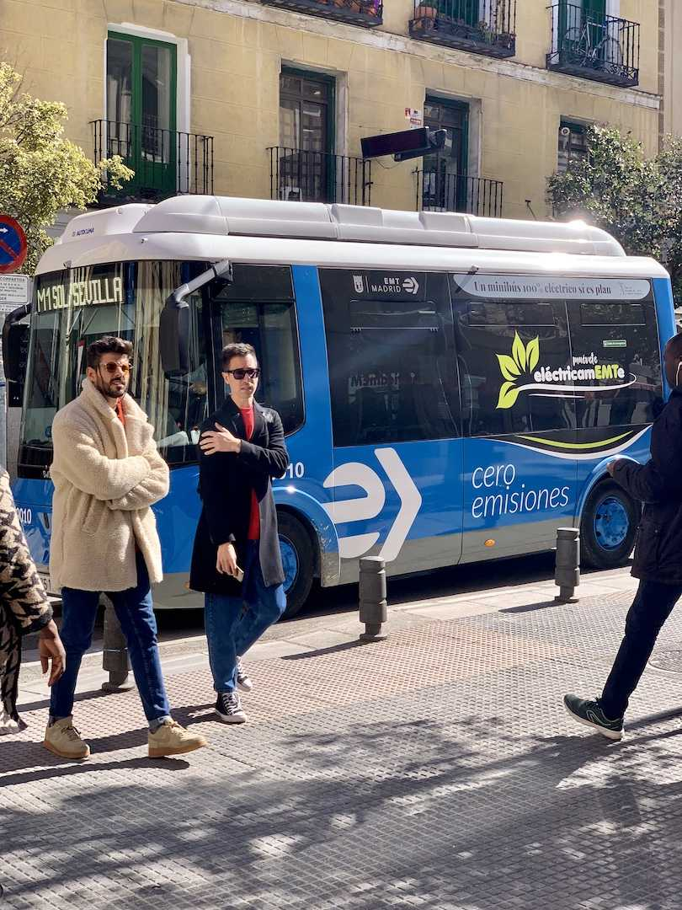
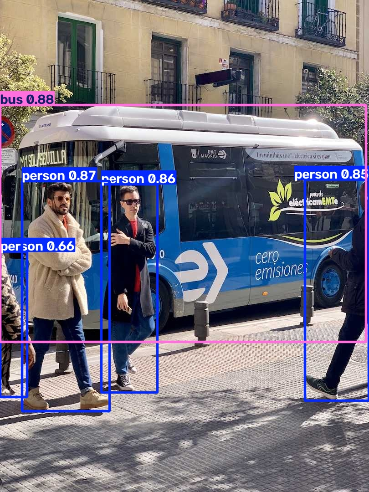

사진 한 장을 탐지(yolo26n.pt)와 분할(yolo26n-seg.pt)로 실행하고, 신뢰도 임계값 0.25와 0.50 결과를 비교했습니다. 아래 버튼으로 결과를 바꿔 볼 수 있습니다.


| 작업 | 0.10 (참고) | 0.25 | 0.50 |
|---|---|---|---|
| 탐지 | bus 1 · person 4 · stop sign 1 (0.13) | bus 1 · person 4 | bus 1 · person 4 |
| 분할 | bus 1 · person 4 | bus 1 · person 4 | bus 1 · person 4 |
| # | 원본 위치 (px) | 대상 | 판정 | 내용 |
|---|---|---|---|---|
| 1 | (0,230)~(803,751) | 버스 | 맞음 | 박스 왼쪽 x=0은 버스 앞부분이 사진 밖으로 잘렸기 때문 |
| 2 | (49,398)~(240,902) | 베이지 코트 사람 | 맞음 | 마스크가 머리부터 신발까지 덮음 |
| 3 | (223,405)~(346,861) | 검은 재킷 사람 | 맞음 | 박스·마스크 정상 |
| 4 | (670,395)~(810,879) | 오른쪽 끝 사람 | 마스크 누락 | 앞으로 뻗은 손·팔뚝(약 x 725~755, y 550~580)이 마스크에서 빠짐 · 확인 필요 |
| 5 | (0,553)~(60,871) | 왼쪽 끝 사람 | 맞음 | 몸 일부만 보여 점수가 가장 낮음(0.66) |
| 6 | (0,252)~(35,326) | 둥근 교통표지판 | 미탐 / 클래스 오류 | 0.25 이상에서 없음, 0.10에서 stop sign으로 잘못 나옴 · 표지판 종류 확인 필요 |
| 7 | 가운데 사람 오른손 | 휴대폰 | 미탐 | 점수 0.01까지 내려도 후보 없음(손에 가려진 작은 물체) · 확인 필요 |
| 8 | — | 볼라드·창문·나무 | 범위 밖 | COCO 80 클래스에 없는 대상이라 찾지 않는 것이 정상 |